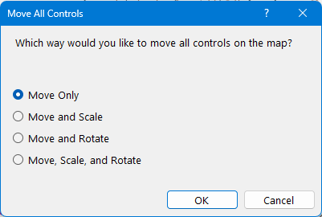
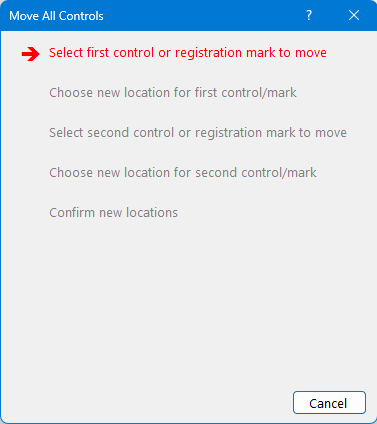
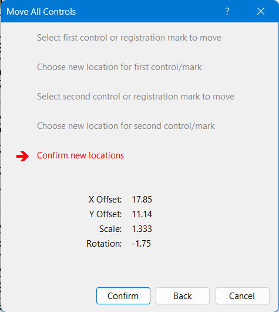

Event/Move All Controls
Allows moving all of the controls (and other course objects) at once. This is typically used if the underlying map has changed in some way.
The first choice is to choose how you wish to move all the controls:

The choices are:
- Move Only: This will move all controls in any direction, without any scaling or rotation. You will need to provide the new location of a single control.
- Move and Scale: This will move all controls in any direction, and also allow a change of scale. You will need to provide the new location of two controls.
- Move and Rotate: This will move all controls in any direction, and also allow a rotation of all controls. You will need to provide the new location of two controls.
- Move, Scale, and Rotate: This will move all controls in any direction, and also allow a rotation and/or change of scall for all controls. You will need to provide the new location of two controls.
After making a choice, click OK. You will then go step by step through the process of selecting controls to move, and providing the new locations of the controls. You can select any control, the start or finish, or a registration mark symbol.

While you are selecting controls, or the new locations of them, you can use the mouse wheel to zoom in and out. You can drag the map around using the right or middle mouse button. If you make a mistake, click the Back button to go back to the previous step.
Once you have selected the new locations of the controls, you have one more chance to confirm that all the controls seem to be in the correct new location. If you are satisfied, click "Confirm""; otherwise you can go back and start again.
